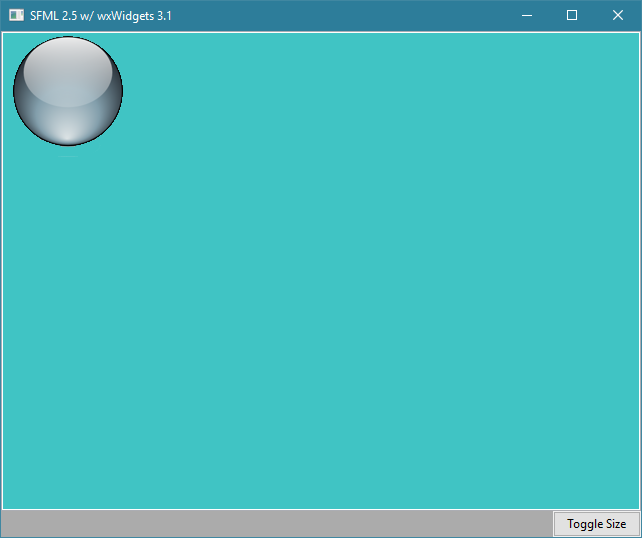
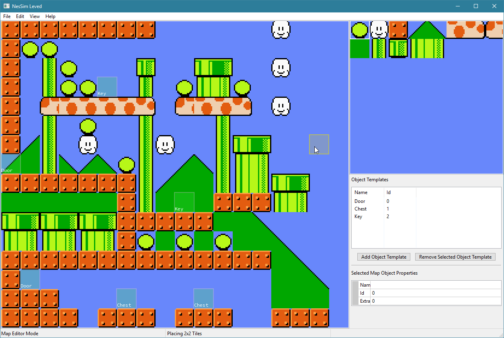

Wx 3.1 with embedded SFML 2.5 control
Jeff DeWall 3 min read March 05, 2019 #C++ #GraphicsI've been working on a project where I wanted to embed an SFML drawing context in a wxWidgets window. I wanted to be able to write a GUI application, but didn't want to have all of the UI be embedded within the SFML window using something like imgui.
I thought it could be useful to others to have a simple example of how to do the same thing.
Simple Example version
I took the code from the SFML 1.6 tutorial here and updated it slightly to work with SFML 2.5 and wxWidgets 3.1. As part of this I played around with using conan to pull down the SFML and wxWidgets dependencies and integrate them with CMake for generating my build files.
I've only tested under Windows 10, and have currently commented out the GTK portions, that according to a Stack Overflow question don't work anymore. I'll need to spend some time trying to build under linux at some point, but that's not a priority for me at the moment.
I've made a repo on GitLab where you can try building it yourself: https://gitlab.com/sr.jilarious/wx_sfml
Currently it's just a simple base class for the SFML canvas, with an overridden implementation that draws a sprite. I also added a wx button that can change the scale of the sprite to show how the two can work together seamlessly.
My Level Editor Use Case
In my case I'm working on a level editor for a Nintendo simulator. I want to prototype a game before porting it over to 6502 assembly and run it on the actual NES. It's a lot faster to iterate on the game logic and see if something is fun if I can just use all the niceties of C++.
For the level editor, this means having various controls embedded within a larger GUI, where I want to access portions of my game logic and drawing code using SFML. For instance, I have a meta-tile editor drawn with SFML where I can build up 2x2 or 4x4 meta-tiles that are built up from the 8x8 pixel tile building blocks available on the NES. Similarly I have a map editor drawn using SFML with my engine code that lets me lay out meta-tiles in layers to build up maps, place objects, etc.
By integrating my engine code with a larger GUI framework, that means I get to have list views, property editors, buttons, menus and everything else with very little extra work.
I'll have more to say about the Nintendo simulator project and the resulting game I'm working on in the future.